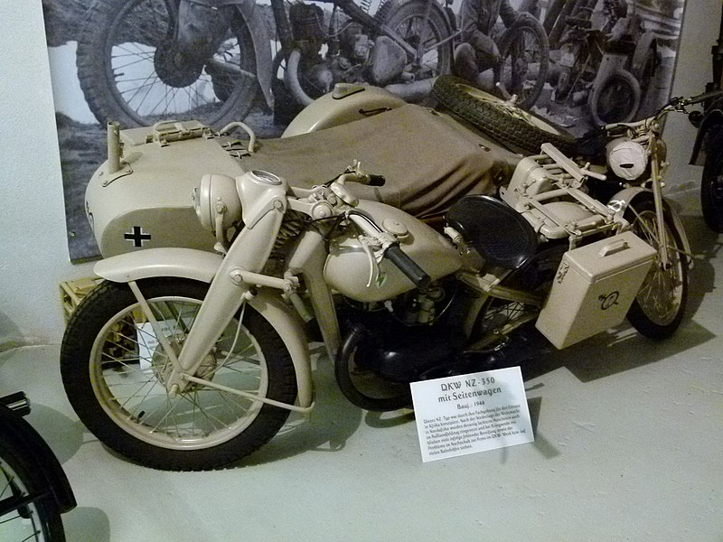
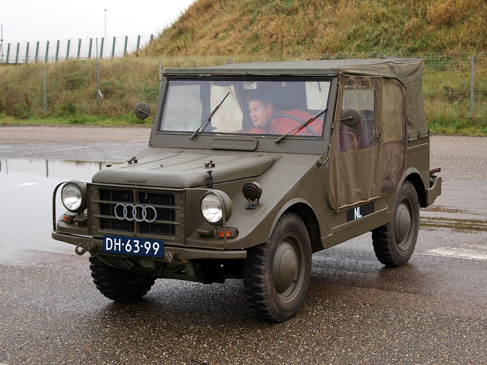

Hoe werden tweetaktmotoren ingezet in militaire voertuigen en machines tijdens de Tweede Wereldoorlog en welke rol speelden ze bij het succes van de strijdkrachten?
NZ-350
Brücke-Osteuropa ©
De DKW NZ 350 was een Duitse militaire motorfiets. De DKW NZ 350 werd geproduceerd door de Duitse fabrikant DKW (Dampf-Kraft-Wagen). De motor werd geïntroduceerd in de jaren 1930 en bleef in productie gedurende de oorlog. De NZ 350 had een eencilinder tweetaktmotor van 348 cc. Hij werd gekozen vanwege het redelijke vermogen en het beperkte onderhoud dat nodig was. De motor werd voornamelijk gebruikt door de Duitse Wehrmacht tijdens de Tweede Wereldoorlog als verkenningsvoertuig en algemeen transportmiddel. Bovendien had deze motor vaak een zijspan waardoor extra lading of bemanning kon worden meegenomen. Na de Tweede Wereldoorlog bleef de motor veelgebruikt, zowel voor militaire als civiele doeleinden, en het behield zijn populariteit als vervoermiddel, vooral in Oost-Europa (DKW NZ 350 Home | DKW NZ, z.d.).
DKW Munga
Alf van Beem ©
De DKW Munga was een licht militair voertuig dat in de jaren 1950 werd ontwikkeld en geproduceerd door de Duitse fabrikant Auto Union, waarvan DKW een merk was. De Munga was niet betrokken bij de Tweede Wereldoorlog, maar speelde wel een rol in de periode na de oorlog. De DKW Munga werd ontwikkeld als licht offroad voertuig dat zeer veelzijdig was. De productie begon in 1956 en liep tot 1968. Het voertuig werd ontworpen voor zowel militaire als civiele doeleinden. De DKW Munga had vierwielaandrijving en een licht frame. Het werd door militairen vaak gebruikt als patrouillewagen, verkenningsvoertuig en voor transport van troepen en goederen. De DKW Munga had een driecilinder 900cc tweetakt benzinemotor en beschikte over 8 versnellingen + twee achteruitversnellingen Wiki (z.d.).
Conclussie
Tijdens de Tweede Wereldoorlog werden voornamelijk viertaktmotoren gebruikt in militaire voertuigen in plaats van tweetaktmotoren. Dit kwam omdat viertaktmotoren in die tijd echt een veel beter brandstofrendement hadden, wat betekende dat tanks dus een stuk langer konden doorrijden, wat belangrijk was voor het afleggen van lange afstanden. Ook hebben viertaktmotoren veel meer koppel bij een lager toerental, wat weer handig is voor het trekken van zware ladingen en bij zware voertuigen. Ook gingen de motoren een stuk minder vaak kapot, wat handig is in een tijd van oorlog. Tweetaktmotoren hadden dus vooral een rol in lichte voertuigen zoals motoren.